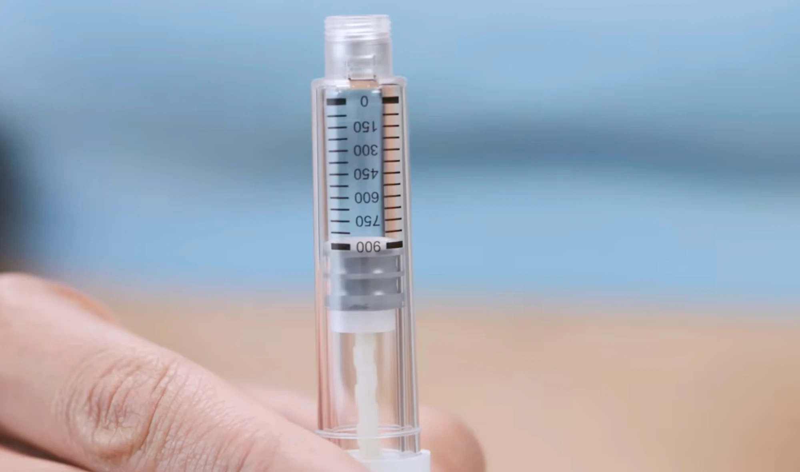
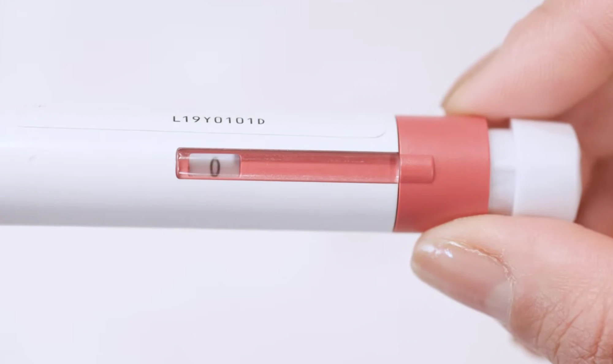
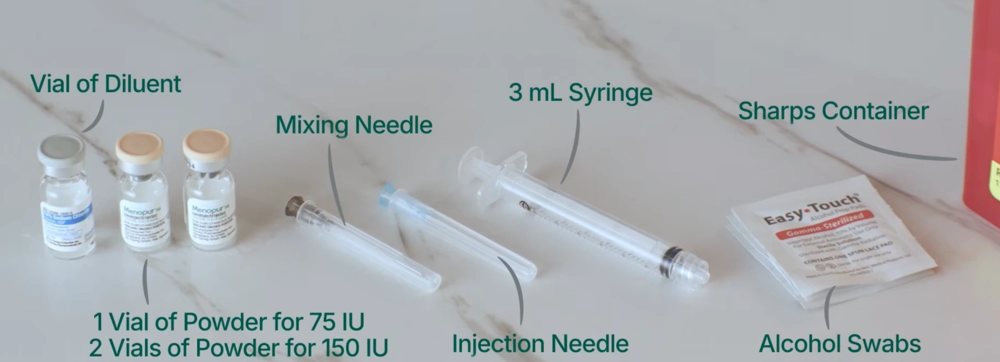

Isa's egg freezing timeline
Isa's period started on October 8. The clinic did the first scan that morning, and injections start that night. Dates from October 9 on are estimates unless marked confirmed, and the clinic adjusts them as the cycle goes.
October 2026
Tap any day to see what's happening. Dates from October 9 on are estimates unless marked confirmed.
Key dates
- Fri, Oct 2Estrogen pills start, one every night
- Tue – Wed, Oct 6 – 7Spotting
- Thu, Oct 8Period started. First ultrasound at UCSF, first injections that night
- Sat, Oct 10Blood test (labs only) at UCSF, 10:45am
- Mon, Oct 12Clinic appointment, details to come
- Oct 8 – about 19Injections every evening, clinic visits every 1 to 3 mornings
- Sat, Oct 17Isa's parents arrive
- Sat – Sun, Oct 17 – 25Isa's parents stay in an apartment near Isa's place
- About Oct 17 – 20Trigger shot at an exact time set by the clinic
- About Oct 18 – 22Egg retrieval. She needs a ride home
- Sun, Oct 25Isa's parents fly home
- Late OctoberRecovery, period returns 1 to 2 weeks after
The medications
Estradiol (Estrace)
Pill at bedtime, Oct 2 until injections startA form of estrogen. It keeps the follicles at a similar size so they grow together once injections begin, which helps more eggs mature at the same time.
Gonal-f
Evening injection from Oct 8, 225 units to startFollicle-stimulating hormone (FSH). It tells the ovaries to grow many follicles at once instead of the usual one.
Menopur
Evening injection from Oct 8, 150 units to start (2 vials of powder mixed with 1 ml of saline)A mix of FSH and LH. It works alongside Gonal-f to help the follicles and the eggs inside them develop well.
Cetrotide
Morning injection, starting around day 5 of injectionsThe brakes. It stops the body from releasing the eggs on its own before the clinic can retrieve them.
Novarel and Lupron (the trigger)
Once, at an exact time set by the clinicTogether they give the eggs the final push to mature and get ready for release. Retrieval happens about 36 hours later, which is why the timing matters so much.
Folic acid
Daily throughoutA B vitamin the clinic recommends taking during treatment to support egg and overall health.
Retrieval day
- She needs a ride home. The clinic requires someone to drive her after sedation. No rideshare alone.
- Plan a quiet rest day. Couch, heating pad, easy food, plenty of water.
- Cramping and bloating are expected. Tylenol helps. Ibuprofen is OK again after retrieval unless the clinic says otherwise.
- The exact date comes late. The clinic picks it based on how she responds, often with only a couple of days' notice.
Good to know
During treatment Isa can't take ibuprofen, only Tylenol, and should skip high-impact or contact activities.
After each clinic visit, the clinic sends next steps that afternoon by portal message or voicemail. If no one has been in touch by 5pm, call 415-353-7475.
If something feels urgent, like severe pain, trouble breathing, or very fast swelling of the belly, call the UCSF clinic's 24/7 line: 415-353-7475.
Injection how-to
Step-by-step notes for doing each shot at home. Tick the boxes as you go, and use "Start over" before the next injection. The clinic also points to Alto's injection guides.
Gonal-f
- Dose
- 225 IU to start (clinic, Oct 8). The clinic may change it after each visit.
- When
- Every evening, at the same time between 6 and 10pm
- Where
- Under the skin of your lower belly. Use a different spot each day.
- Pen
- GONAL-f RFF Redi-ject, 900 IU
- Max per shot
- 450 IU on this pen
Know the parts
- Pen cap. Covers the needle end. Comes off before you attach a needle.
- Needle connector. The threaded tip the needle twists onto.
- Reservoir. The clear part that holds the medicine. Check it isn't cracked and the liquid is clear.
- Plunger. The dark part inside the reservoir that pushes the medicine out.
- Expiration date. Printed on the label.
- Dose display. The window showing how many IU are dialed. After a shot it should read 0.
- Dose knob. The red end. Turn it to dial, press it to inject.
- Peel-off seal. The paper tab on top of a new needle. Don't use the needle if it's torn.
- Outer needle cap. The big plastic cap. Keep it for removing the needle afterward.
- Inner needle shield. The thin green cover right on the needle. Throw it away.
- Needle. Use a new one for every shot.
-
0Set up
Don't warm the pen in a microwave or with any other heat.
-
1Get ready
Don't shake the pen, since that makes air bubbles. Don't use scissors or a knife on the box, and don't use a pen that's expired, cracked, or was dropped.
-
2Choose and clean the spot
Don't touch or blow on the spot after cleaning it.
-
3Attach the needle


Don't put the thin inner shield back on the needle. That's how needle sticks happen.
-
!First time using this pen?
- New pen: look for a drop of liquid at the needle tip. If you see one, go to step 4. If you don't, or you aren't sure, do "Make a droplet" below first.
- Pen you've used before: skip this and go to step 4.
-
4Dial your dose
What the display looks like when 225 is dialed. Don't push or pull the knob while turning it. If you go past your dose, just turn it back. If you're not sure of today's dose, call the clinic.
-
5Inject
Don't let go of the knob while the needle is still in. Going in at an angle can bend the needle.
- Shows 0: you got the full dose.
- Shows another number: that's how much is still missing. Write it in the diary, then do steps 1 to 7 again with a new pen, dialing that number.
-
6Remove the needle
-
7Write it down
-
+Make a droplet (new pen only)
No droplet? Call the clinic before injecting.
Based on the instructions that came with the GONAL-f RFF Redi-ject pen. Photos are stills from the EngagedMD training video. If the clinic tells you something different, do what the clinic says.
Menopur
- Dose
- 150 IU to start (clinic, Oct 8). The clinic may change it after each visit.
- Mix
- 2 vials of powder with 1 ml of saline (the vial of diluent)
- When
- Every evening, with Gonal-f, between 6 and 10pm
- Where
- Lower belly, at least an inch away from tonight's Gonal-f spot
- Heads up
- Menopur often stings for a minute. That's normal.
Supplies for each shot

- 1 vial of diluent. Saline, the liquid you mix the powder with.
- 2 vials of Menopur powder. Each one is 75 IU, so two make 150 IU.
- 1 mixing needle. The longer one, for drawing up and mixing.
- 1 injection needle. The shorter, thinner one, for the shot itself. Check the labels if you're not sure which is which.
- 1 syringe, 3 ml.
- Alcohol swabs and the sharps container.
-
1Get ready
-
2Draw up 1 ml of saline
-
3Mix the powder
Use it right away. Mix Menopur just before you inject it, not ahead of time.
-
4Switch needles
-
5Inject
Don't put the cap back on the needle. A little sting or redness afterward is normal.
Written from the standard Menopur mixing steps and the clinic's instructions. Check it against the clinic's training video or Alto's injection guides. If the clinic tells you something different, do what the clinic says.
Travel for Mom and Dad
- Arrive
- Saturday, October 17
12:42pm at San Francisco airport - Stay
- Apartment on Fell St
Saturday Oct 17 to Sunday Oct 25 - Fly home
- Sunday, October 25
Flight not chosen yet
Where you're staying
- Check in
- Saturday, October 17, from 3pm
- Check out
- Sunday, October 25, by 11am
- Nights
- 8
- Space
- Entire apartment, 2 bedrooms, kitchen, 1 bathroom
You land before check-in. The flight arrives at 12:42pm and check-in is at 3pm. Go to Isa's place first. It's a 5 minute walk from the apartment.
Calendar
Tap any day to see the plan. Possible retrieval day means the clinic will pick one of these days for Isa's procedure, with only a day or two of notice.
Map
- Isa's place967 Oak St
- Your apartment1154 Fell St · about 5 min walk to Isa's
Flights
Leaves just after midnight. Be at the Quito airport on Friday night, October 16.
- 12:59am Leave Quito Delta 632
- 7:10am Land in Atlanta 3 hr 25 min wait
- 10:35am Leave Atlanta Delta 672
- 12:42pm Land in San Francisco
Flight not chosen yet. Apartment check out is by 11am, so a flight around midday or later works well.
When booking, pick a fare that allows changes (not "Basic Economy"), in case the dates move.